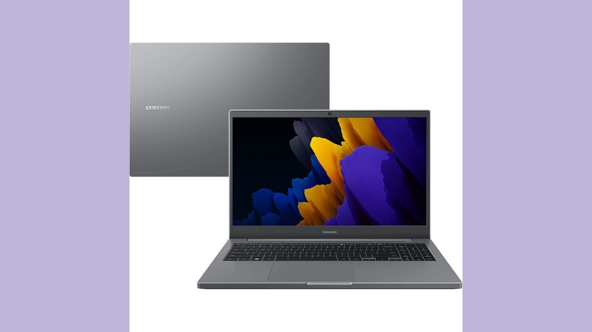
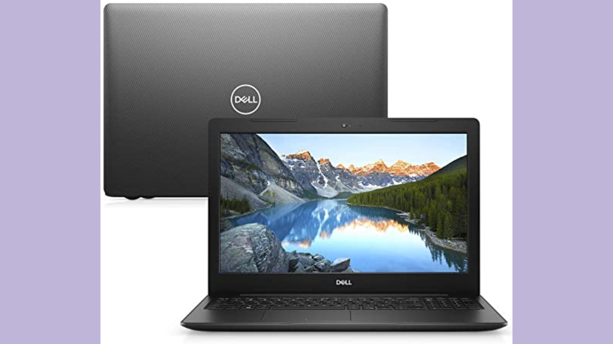
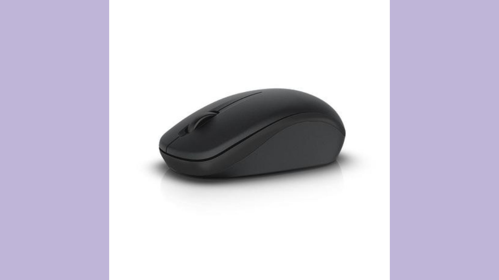
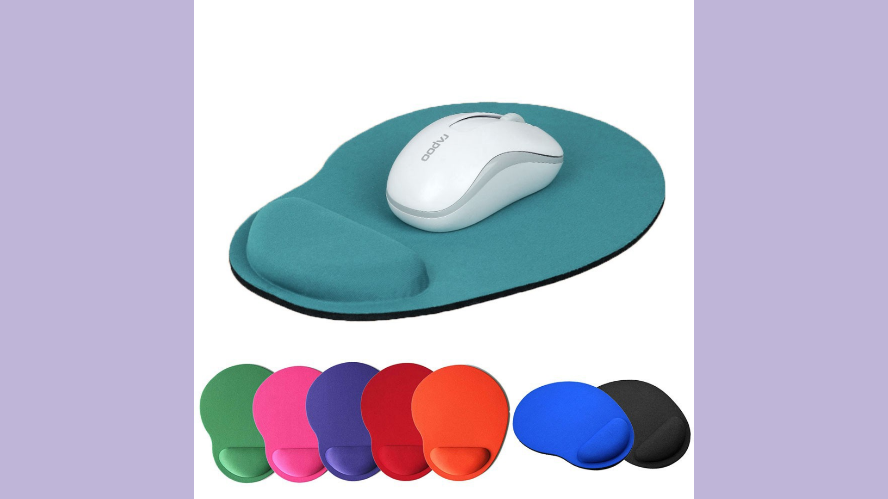
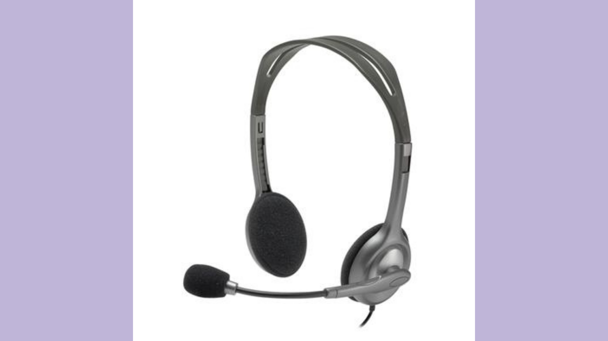
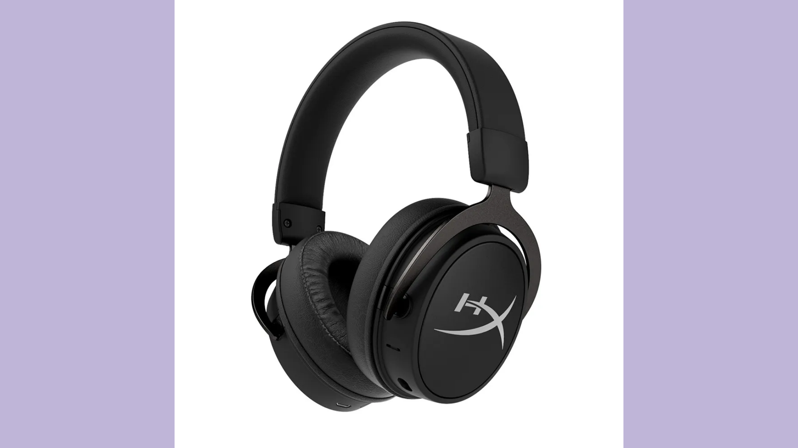
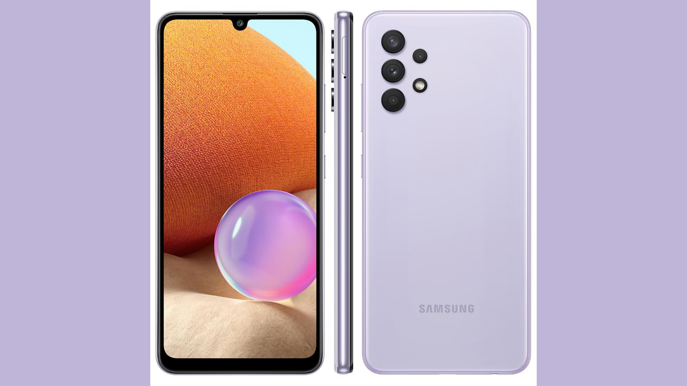
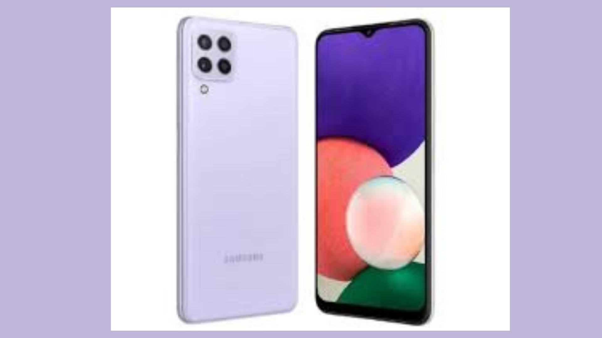

R$ 50,00
Pen drive twist 64gb usb leitura 10MB/S e gravação 3MB/S preto multilaser-PD590.
É prático e portátil, vem com uma proteção para não danificar o pen-drive.

R$ 4.499,10
Samsung Book - Windows 10 Home -Intel Core™i7 -8GB - 256GB de SSD- Intel Iris Xe Cinza Chumbo
Samsung book oferece uma maior aceleração de desempenho, carregue arquivos, visualize e encontre tudo com a velocidade que seu dia a dia precisa, execute aplicativos de forma muito mais rápida e segura, com menor risco de danos e maior duração de bateria.Tem uma placa de vídeo Ideal para produção de conteúdo, permite a edição de imagens e outros aplicativos que fazem uso intensivo da interface gráfica, além de rodar os principais jogos nos seus momentos de lazer.Receba notificações do seu smartphone, gerencie seus compromissos, envie SMS e compartilhe fotos e vídeos diretamente do seu Samsung Book.

R$ 2.698,00
Notebook Inspiron 15 3000
Oferecem maior capacidade de resposta, desempenho mais silencioso, além de maior resistência a choques em comparação com as unidades de disco rígido tradicionais. Desfrute de uma tela maior com bordas finas em dois lados que possibilitam uma experiência de visualização ampliada. Mantenha o foco nas tarefas interagindo com o seu telefone diretamente do PC Dell. Todos os laptops Inspiron são projetados para garantir performance confiável por anos de uso regular.

R$ 98,00
Mouse sem fio Dell - WM126 (preto)
Tem uma excelente duração de bateria, e por ser sem fio, não deixa aquela bagunça de cabos.

R$39,00
Mouse pad com Apoio em Gel C3 Tech MP-200
O mouse pad MP-200 oferece um apoio para o punho, em material a base de gel. Ajudar a evitar lesões causadas por esforço repetitivo.

R$72,00
Headset Stereo Logitech H111.
Possui uma conexão de áudio padrão de 3,5 mm, comprimento do cabo de 235cm.
Um fone de ouvido confiável para tarefas diárias, as almofadas com espuma garantem o seu conforto.

R$: 1.279,90
Headset gamer hiperx cloud mix, com fio e Bluetooth.
Fone de Ouvido customizado e dinâmico, 40 mm com magneto de neodímio, case do fone de ouvido, cabo de fone de ouvido destacável de 1,3 m, Bluetooth, com vida da bateria de 20 horas, alcance sem fio de até 10 m, headset gamer com fio certificado para áudio de alta resolução de Hi-Res, com uma faixa de frequência de 10Hz a 40kHz. Cabo trançado removível com prático controle de áudio in-line, ajusta facilmente o volume e silencie o microfone sem precisar entrar nos menus do sistema, compatibilidade com múltiplos dispositivos.

R$ 1.498,00
Smartphone Samsung Galaxy A32
Encante-se com detalhes vibrantes no display full HD+ Super AMOLED, alcançando 800 nits para proporcionar mais nitidez mesmo com a luz do dia.Com o design icônico da câmera e o acabamento brilhante na parte de trás, este celular não apenas se destaca, ele define um novo padrão.O sistema de câmera multilentes do Galaxy A32 aprimora as fotos. Use a alta resolução na câmera principal de 64 MP para tirar fotos nítidas.

R$ 1.159,10
Smartphone Samsung Galaxy A22 Preto 128GB, 4GB RAM, Câmera Quádrupla Traseira, Tela Infinita de 6.4", Bateria de 5000mAh, Dual Chip e Octa Core
Desenvolvido com tecnologia de ponta, o Smartphone Galaxy A22 é a novidade surpreendente da Samsung. Com o design moderno e perfeito para você que não abre mão de estar